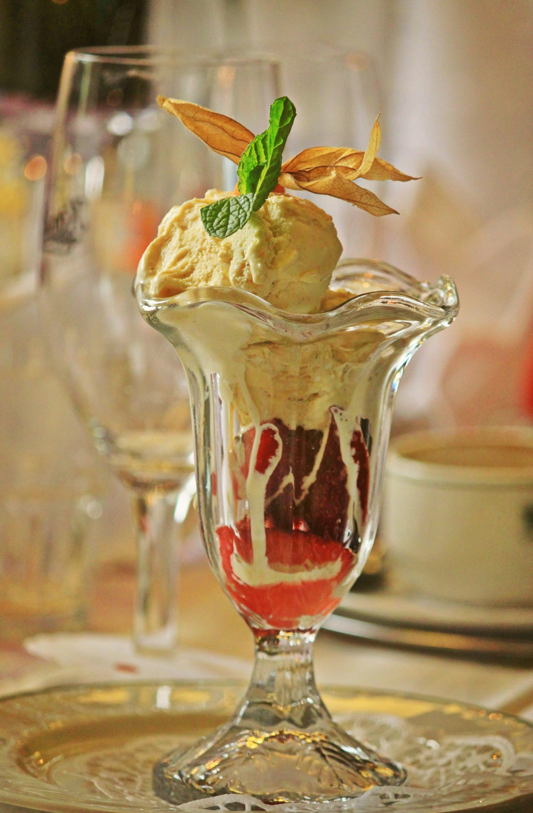

Homemade Peach
Ice Cream
Recipe by: James Parkes
20+ servings 30min 20min

Ingredients
- 2(1 lb)bags of ice
- 15-20 fresh peaches
- 3 cups sugar
- 1 tbsp lemon juice
- 1 box of rock/ice cream salt
- 1 egg beater
- 1 tbsp vanilla flavoring
- 1 cup whole milk
Directions
- Wash,peel, and cut peaches into medium size pieces
- Add at least 1 tbsp lemon juice to peaches untill all peaches are lightly coverved. The lemon juice will keep te peaches from browning.
- Add peaches,sugar, and milk into the blender/food processor and blend untill all ingredients are fully incorporated. The peaches are not meant to be fine pieces,but rather small chunks.Pour the mixture into ice cream container to be used in the freezing process.
Repeat this process until all the peaches have been blended.Once this step is complete,at leat 3 cups of sugar and 1 cup of milk should be incorporated into the mixture.Make sure that once during the blending process you add the egg beater to the mixture to be incorporated.
- To fill the ice cream container to the fill line, continue to add milk.Once the mixture has been topped off to the fill line, add sugar to taste. Almost always, the mixture requires more sugar to be added than the recipe calls.
- Place the ice cream container insie the ice cream machine.Start the ice cream machine.While the ice cream machine is running,continue to add layesa of ice and rock salt to the sides of the machine to freeae the ice cream so that the entire container is surrounded by ice and rock salt.Once the machine finishes,the ice cream can be served immediately or placed into the freezer to serve later.